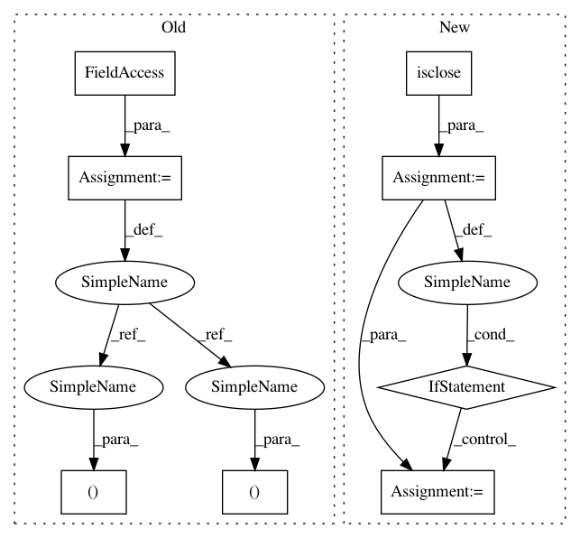

4b8dec5e7199ad302c52bf9eb6914a170491334c,acoular/fbeamform.py,PointSpreadFunction,_get_psf,#PointSpreadFunction#,801
Before Change
// get indices which have the value True = not yet calculated
g_ind_calc = self.grid_indices[calc_ind]
r0 = self.r0
rm = self.rm
kj = array(2j*pi*self.freq/self.c)[newaxis]
steerVecFormulation = steerVecTranslation(self.steer)
if self.calcmode == "single":
for ind in g_ind_calc:
ac[:,ind] = calcPointSpreadFunction(steerVecFormulation, (r0, rm, kj, [ind]), self.precision)[0,:,0]
gp[ind] = True
elif self.calcmode == "full":
gp[:] = True
ac[:] = calcPointSpreadFunction(steerVecFormulation, (r0, rm, kj, arange(r0.shape[0])), self.precision)[0,:,:]
else: // "block"
hh = calcPointSpreadFunction(steerVecFormulation, (r0, rm, kj, g_ind_calc), self.precision)
indh = 0
After Change
precisionTuple = _precision(self.precision)
// check wether self.freq is part of SteeringVector.f
freqInSteerObjFreq = isclose(array(self.steer_obj.f), self.freq)
if freqInSteerObjFreq.any():
freqInd = flatnonzero(freqInSteerObjFreq)
else:
warn("PointSpreadFunction.freq was appended to PointSpreadFunction.steer_obj.f, "\
"as it was not an element of the original list! "\
"You should check possible implications on beamformer results, etc.", Warning, stacklevel = 2)
self.steer_obj.f.append(self.freq)
freqInd = int(-1)
// get the cached data, or, if non-existing, create new structure
if not fr in self.h5f.root:
if self.calcmode == "readonly":
raise ValueError("Cannot calculate missing PSF (freq %s) in \"readonly\" mode." % fr)
In pattern: SUPERPATTERN
Frequency: 3
Non-data size: 8
Instances
Project Name: acoular/acoular
Commit Name: 4b8dec5e7199ad302c52bf9eb6914a170491334c
Time: 2018-05-03
Author: tom.j.gensch@campus.tu-berlin.de
File Name: acoular/fbeamform.py
Class Name: PointSpreadFunction
Method Name: _get_psf
Project Name: acoular/acoular
Commit Name: 276f8fc3fe9a7424bae6585ed4453190e2a70815
Time: 2018-05-02
Author: tom.j.gensch@campus.tu-berlin.de
File Name: acoular/fbeamform.py
Class Name: PointSpreadFunction
Method Name: _get_psf
Project Name: geomstats/geomstats
Commit Name: 8e0ca26e5571d47425fc73bb3bb118082b742d00
Time: 2021-03-17
Author: nicolas.guigui@inria.fr
File Name: geomstats/geometry/spd_matrices.py
Class Name: SPDMatrices
Method Name: random_uniform
Project Name: acoular/acoular
Commit Name: 4b8dec5e7199ad302c52bf9eb6914a170491334c
Time: 2018-05-03
Author: tom.j.gensch@campus.tu-berlin.de
File Name: acoular/fbeamform.py
Class Name: PointSpreadFunction
Method Name: _get_psf